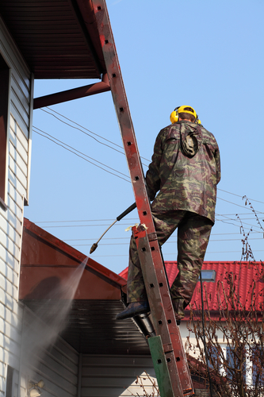

The cost of roof cleaning with Power Wash Squad is well worth that investment, as regular roof washing offers many benefits for the house itself and your property overall. Exterior house washing in Power Wash Squad and especially roof cleaning is also not a DIY job!
Each pressure washing contractor in Power Washing Squad sets their own roof washing prices, usually anywhere from $40 to $100 per hour or a few dollars per square foot. Average costs for roof washing in Power Wash Squad might range around $200 or so, depending on your home’s size.
To ensure you care for your home properly and keep it in good repair, you might note some added information about roof cleaning in Power Wash Squad. You can then discuss your options with a pressure washing company near you and know what to expect by way of fees and services.

Does Your Home Need Roof Cleaning of Power Wash Squad?
If you’ve never invested in roof washing of Power Wash Squad, you might note some reasons why this service is so vital. One important consideration is that exterior house cleaning removes layers of soot and acid rain residues that tend to dry out roofing shingles and other materials, protecting those materials from potential damage.
Roof cleaning in Power Wash Squad also washes away developing mold, mildew, moss, and algae. These materials tend to spread along all the nooks and crannies of a roof including the spaces between asphalt shingles and tiles, loosening them. Algae also eats away at asphalt shingles, causing even further damage!
Exterior house washing in Power Wash Squad also improves your property’s curb appeal in an instant. Roof washing removes layers of unsightly dirt and grime as well as bird droppings tree sap, and other debris, restoring the colors of shingles. You might be surprised at the appearance of your home and improvement in your property’s look overall after Power Wash Squad roof washing.
What Is Soft Wash Roof Cleaning in Power Wash Squad?
One reason that pressure washing is not a DIY job is that too much pressure is damaging to a home’s exterior building materials, especially wood decks and fences, exterior glass, and asphalt roofing shingles. It doesn’t take much pressure to loosen shingles or blow them right off the roof, or to bend metal flashing and chip exposed chimney brick.
Soft wash roof cleaning for Power Wash Squad starts with a specialty surfactant that seeps into all the crevices of a home’s roof including the areas between shingles and around flashing. This surfactant is designed to gently but effectively dissolve thick dirt, mud, mold, algae, and other debris. After several minutes, a low-pressure rinse then washes it all away.
Soft wash systems are an excellent choice especially for older homes and roofs already in disrepair. The low pressure rinse reduces the risk of loosening tiles and shingles while the cleansers used during the process ensure an effective and thorough clean.
Why Choose Power Wash Squad Gutter Cleaning Along With Roof Washing?
It’s not unusual for Power Wash Squad power washing contractor to recommend gutter cleaning along with roof washing. Professional gutter cleaning of Power Wash Squad ensures gutters are clean and clear of clogs, so rainwater runs to nearby downspouts and away from the home rather than over the sides of gutters.
Gutter cleaning Power Wash Squad at the same time as roof washing ensures a thorough clean and you might even get a break on the price of the two jobs if you schedule them together! Your home will be protected from water damage while you enjoy a clean and pristine roof and a more attractive property overall.
How to Keep Your Home’s Roof Looking Its Best
While roof washing Power Wash Squad is an excellent way to ensure its condition and appearance, you might also note a few steps you can take to keep your roof in tiptop shape! The first is to trim back any tree branches that allow for birds to roost, as birds overhead will result in droppings along the roof. Do the same for branches that drop sap, twigs, moss, and the like.
If your home’s roof still collects lots of debris, invest in a roof broom or brush. These brooms have long handles that extend the brush across the roof so you can pull debris off safely, from the street or while on a ladder. As with your home’s floors, a simple sweep can sometimes improve the appearance of a roof and keep it looking clean between professional washing!
It’s also good to invest in a roof inspection every few years. A roofer might notice missing shingles, bent shingles, and other damage detracting from the look of the roof. Investing in needed repairs improves the property’s appearance while ensuring your roof is always in good condition.
How Often Should You Invest in Roof Washing in Westchester?
Most homeowners need exterior house washing in Westchester every other year or so, depending on their particular neighborhood. Homes near the university or other crowded areas in Westchester might be more prone to a buildup of soot, grime, and other debris from car engines, planes flying overhead, and the like, and might need roof washing every year.
If your home is located under mature trees prone to dripping sap, seeds, twigs, and other residues, it might need pressure washing services every year rather than every other year. If you tend to barbecue or grill outdoors and create lots of smoke, you might notice dark stains on your home’s roof that need washing more frequently than every few years.
A power washing contractor in Westchester can also note a good schedule for your home, to ensure every inch of your property is clean and pristine. He or she might also recommend exterior wall washing and driveway pressure washing as well, to remove dirt and grime in those areas and keep your property looking its best. Along with roof cleaning in Westchester, you’ll then have a home that looks as good on the outside as it does on the inside!